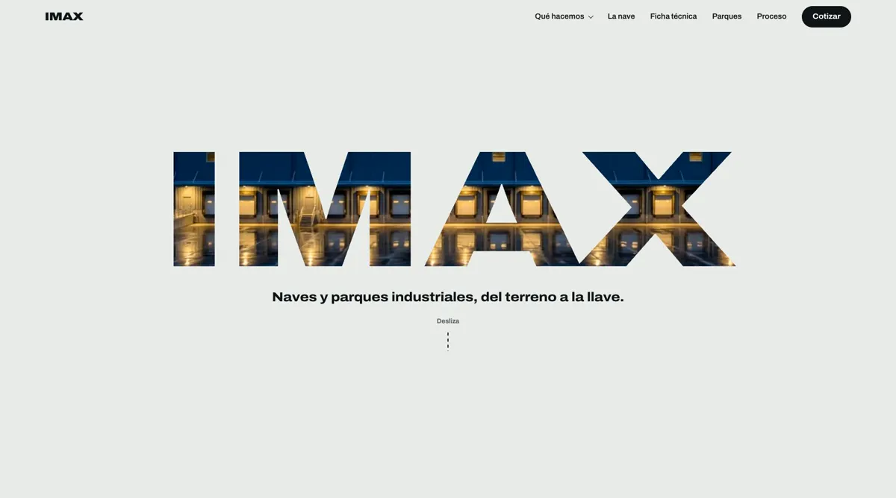
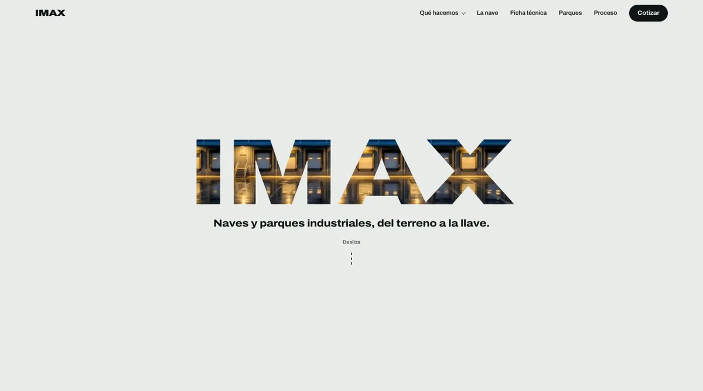
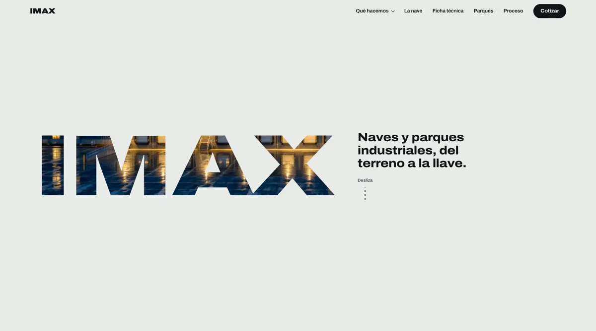
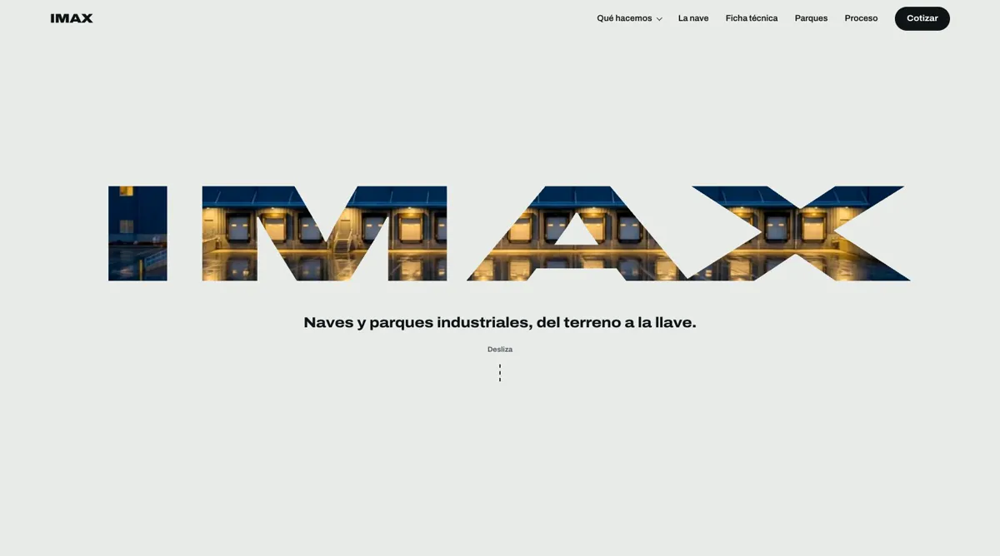
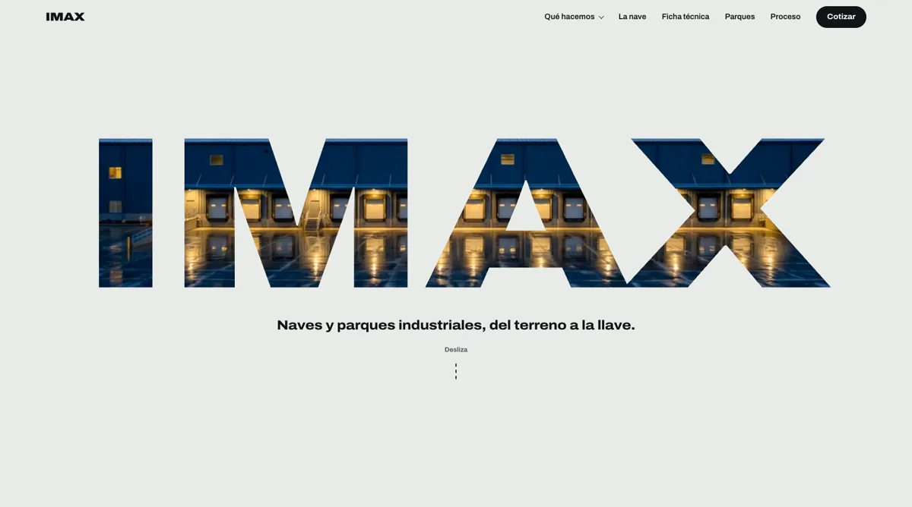

¿Qué tamaño de IMAX en la portada?
Cuatro ajustes de la palabra para pantallas de computadora; en el celular no cambia. Abre cada opción en vivo y baja con el scroll: todas mantienen las cortinas al cargar y la entrada por la M.

A. MediaLa misma composición, una cuarta parte más chica. Queda aire arriba y abajo de la palabra.Ver en vivo

B. CompactaCasi la mitad del tamaño actual. Más espacio libre y la frase cerca de la palabra.Ver en vivo

C. HorizontalIMAX a la izquierda y la frase a la derecha, a la misma altura. Más editorial.Ver en vivo

D. PanorámicaOcupa todo el ancho pero con letras más bajas, como una franja de cine. Las letras se ven más anchas que su forma original.Ver en vivo

ActualLa que está publicada hoy, para comparar.Ver en vivo